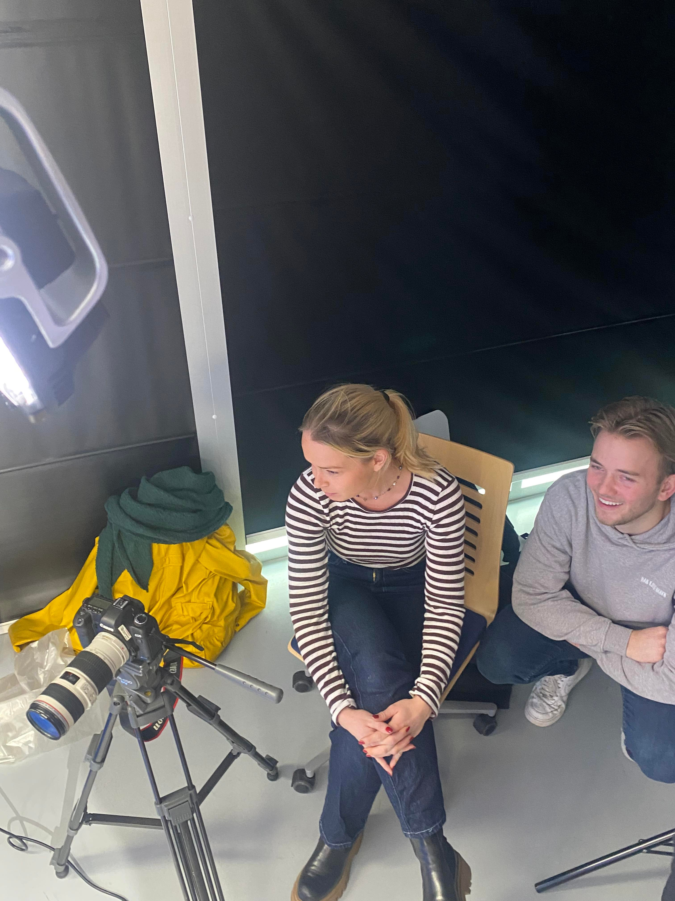

How to tie dye, tema: video (how to) Projektbeskrivelse: I dette projekt havde vi til formål at kreere en ”How To video”. Vi skulle gøre brug af storyboards, Premiere Pro og professionelle kameraer. Derudover arbejdede vi med hele processen bag, som blandt andet idéudvikling, projektstyrring, postproduktion, og det som nævnt i overstående. Research: Vi undersøgte på en masse How to videoer, for at finde ud af hvad der manglede på ”markedet” og det vi selv følte ville være et godt produkt at biddrage med. Indsigt: Efter research på de forskellige medier som TikTok og Youtube, kunne der konkluderes at ”how to” videoer hurtigt kan falde til jorden, eller mister seernes interesse. Derfor valgte vi at gå med noget, som skulle være en visuel fryd for øjet, samt et produkt hvor man ikke ville være i tvivl om slutresultatet. Kreativ idé/Løsningsforslag: Vi konkluderede at vi ville lave en ”How to tie dye” video, da det ville opfylde alle vores ønskede krav. Projektevaluering (Hvad lærte jeg, hvad var min rolle i projektet): Projektet gav mig en bredere forståelse for visuelle virkemidler i videofortælling, brug og håndtering af kamera, udarbejdelse af storyboards. Ydermere fik jeg en genopfriskning af Canon 5D, samt Premiere Pro. Mine primære roller i projektet, gik ud på at instruere samt være kamera og lydmand.
